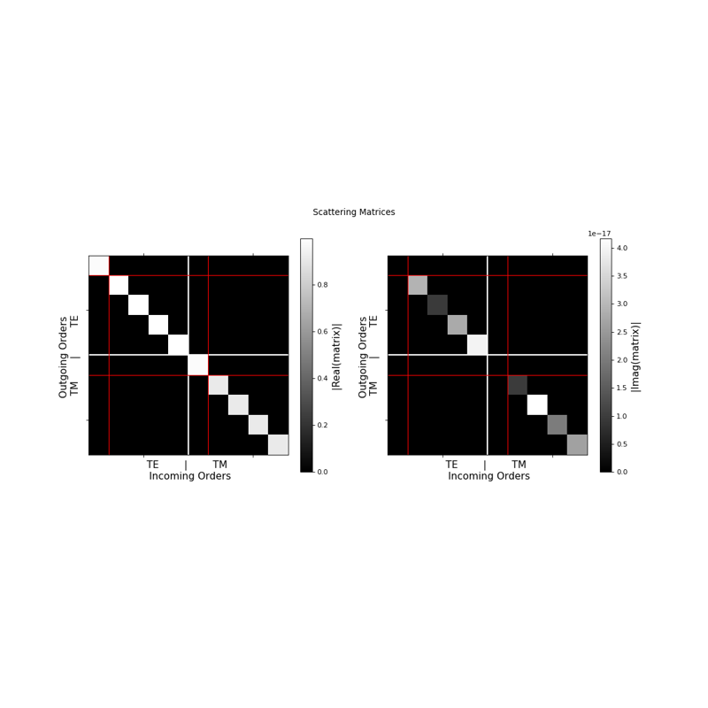
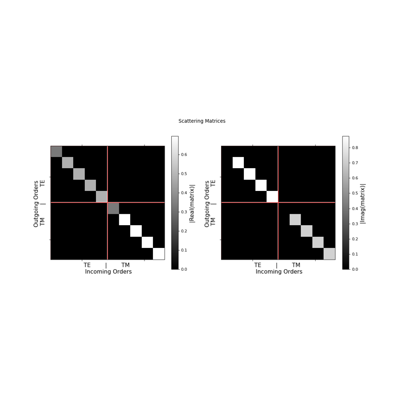
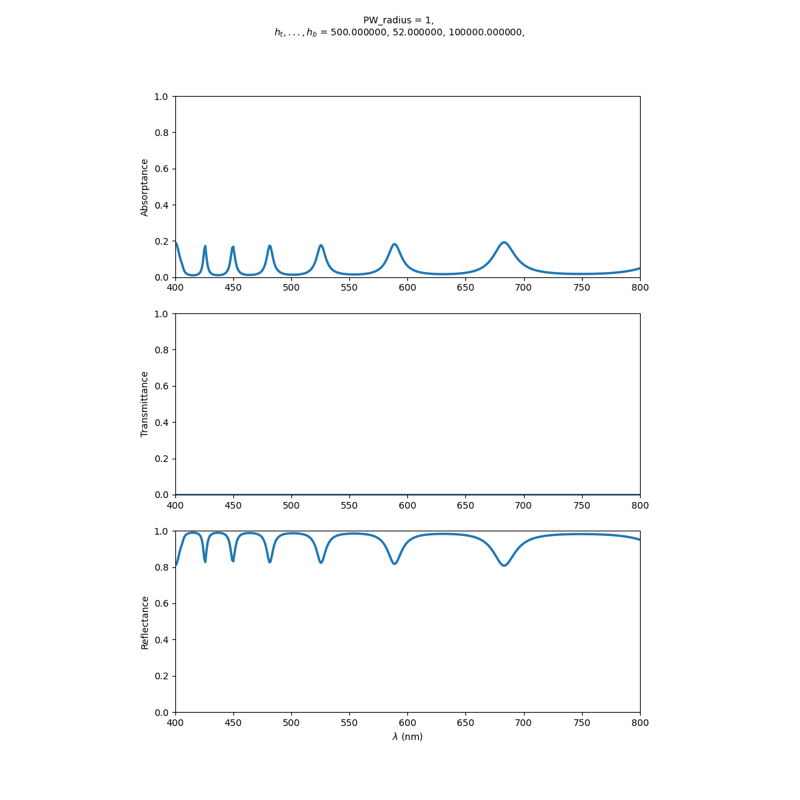
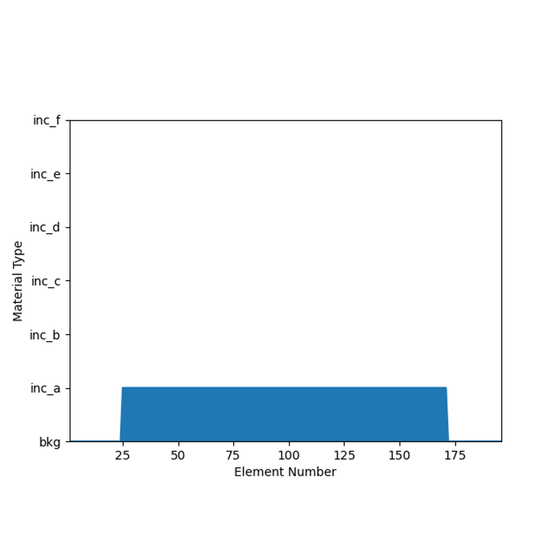
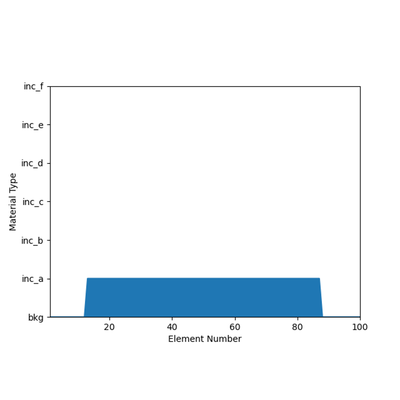
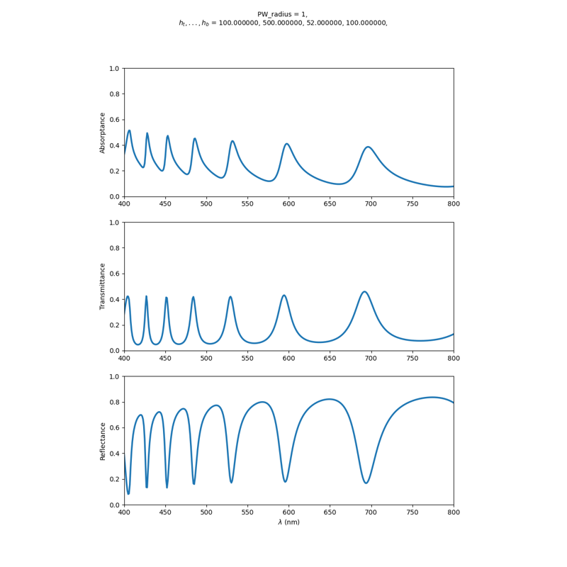
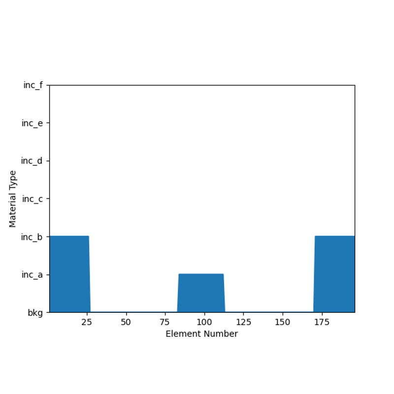
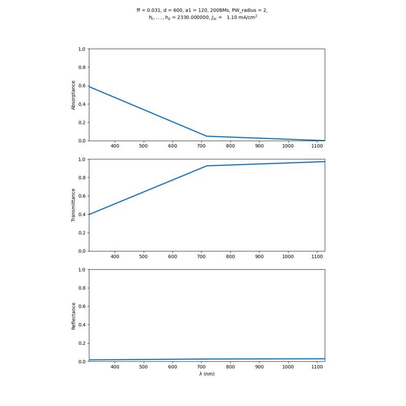
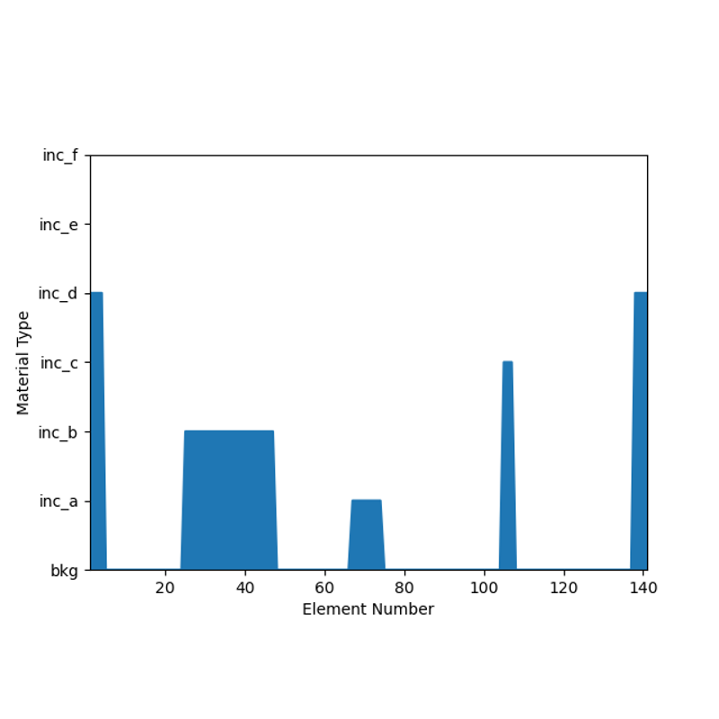

Examples#

Single interface dispersive

Single interface

Metallic multilayer stack

Lamellar grating

Combining 1D and 2D arrays

Multilayered stack

1D grating

Nanowire array

1D grating with 3 inclusions